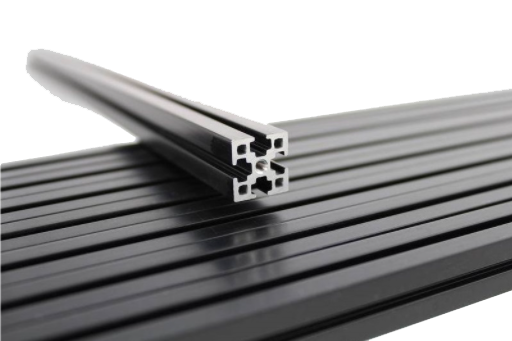

Specifications
This section details the technical specifications of Interbotix X-Series LoCoBots.
In-Depth Specifications
This section provides links to each of the X-Series LoCoBots' more detailed specifications.
The rover is powered by an Intel® NUC. An Intel® RealSense™ Depth Camera D435 sits atop an independently controlled pan/tilt mechanism (2XL430-W250) at the top of the platform which allows mapping and scanning. The (optional) 360 degree LIDAR can further improve both mapping and scanning for more advanced projects. Older versions of the robot are built on the Yujin Robot iClebo Kobuki Base (YMR-K01-W1). Newer versions of the robot are built on the iRobot® Create® 3 mobile robotics platform.
There are 3 different robot arms that can be added to the LoCoBot platform, offering 4, 5 and 6 degree of freedom options. All of the arms are based off of the X-Series servos from Robotis Co., specifically the XM430-W350 and XL430-W250 which offer easy hardware setup, available software API's and other "smart servo" benefits.
Model Specifications Table
| Total Weight (kg) | Height (mm) | Width (mm) | Degrees of Freedom | Reach (mm) | Span (mm) | Repeatability (mm) | Working Payload (g) | |
|---|---|---|---|---|---|---|---|---|
| LoCoBot Base | 6.95 | 63 | 35 | - | - | - | - | - |
| LoCoBot PincherX-100 | 7.72 | 63 | 35 | 4 | 300 | 600 | 5 | 50 |
| LoCoBot WidowX-200 | 9.45 | 63 | 35 | 5 | 550 | 1100 | 1 | 200 |
| LoCoBot WidowX-200 6DOF | 11.25 | 63 | 35 | 6 | 750 | 1500 | 1 | 750 |
Hardware
Kobuki YMR-K01-W1
The Kobuki platform is a low-cost mobile research base designed for education and research on state of art robotics. With continuous operation in mind, Kobuki provides power supplies for an external computer as well as additional sensors and actuators. Its highly accurate odometry and calibrated gyroscope enables extremely precise navigation.
See the Kobuki User Guide for more in-depth information on the platform.
Create® 3
The Create® 3 is an affordable, mobile robotics platform for educators, students, and developers.
The robot has a full suite of on-board sensors and actuators which will allow you to develop and test your robotics algorithms.
The software is entirely based on ROS 2: all sensors data are produced through ROS 2 publications while ROS 2 servers and subscriptions are used to control actuators and respond to users requests. The robot also provides some autonomous behaviors out of the box, such as docking, wall-follow and reactions to obstacles. All these can be triggered and/or configured through ROS 2 actions and parameters. The Create® 3 base is configurable via a webserver that can be accessed over a network. You can find more details on the Interbotix-specific configurations on the Create® 3 Configuration documentation page.

See the Create® 3 Docs for more in-depth information on this platform.
Intel NUC Mini PC
8th Gen Intel Dual-Core i3, 8GB DDR4 Ram, 240GB Solid State Drive (SSD), Intel Iris Plus Graphics 655, Wifi, Bluetooth 5.0, Gigabit Ethernet, 4k Support, Card Reader, Dual monitor Capable, HDMI, USB, Thunderbolt 3, Ubuntu 20.04.
Intel® RealSense™ Depth Camera D435
Part of the Intel® RealSense™ D400 series of cameras, a lineup that takes Intel's latest depth sensing hardware and software packages them into easy to integrate products. Perfect for developers, makers, and innovators looking to bring depth sensing to devices, Intel® RealSense™ D400 series cameras offer simple out of the box integration and enable a whole new generation of intelligent vision equipped devices.
See the RealSense D400 Series Datasheet
for more information.
Pan & Tilt
The DYNAMIXEL 2XL can control two axis with a single module, which serves as the pan & tilt for the camera of the LoCoBot. This servo allows for scanning or object detection whether the platform is in motion or stationary. The 2XL series adopts new features that allow 360 degrees control mode with its contactless magnetic encoder and hollow back case assembly structure and Metal gear (Powder Metallurgy) is used for high durability.
See the DYNAMIXEL 2XL e-Manual for more information.
Aluminum Construction
Constructed of 20x20 extruded aluminum and 3mm anodized aluminum plates the LoCoBot is extremely durable. The T-Slot aluminum bars have channels used to connect other bars, parts or to create mounting points for additions to the LoCoBot. Standard 20x20 post assembly T-Slot nuts can be used for easy customization of the platform.
RPLIDAR A2M8 360° Laser Range Scanner (Optional)
The RPLIDAR A2 is an indoor, 360 degree 2D LIDAR. Each RPLIDAR A2 can take up to 8000 samples of laser ranging per second thanks to its high rotation speed. The on-board system can perform 2D 360° scans within a range of 12 meters (18m with a bit of firmware adjustment). Additionally, the generated 2D point cloud data can be used in mapping, localization and object/environment modeling.
See the RPLIDAR A2M8 Datasheet for more
information.
MAXOAK K2 50,000mAh Power Bank
The MAXOAK K2 Power Bank is designed to power laptop computers for long durations. This 50kAh (50,000Ah) power bank can keep the NUC and all peripherals running for 4h with moderate usage. It has multiple outputs including 20V 5A and 12V 2.5A barrel jacks, two 5V 2.1A USB-A ports, and two 5V 1A USB-A ports.
See the MAXOAK K2's store page for more information.